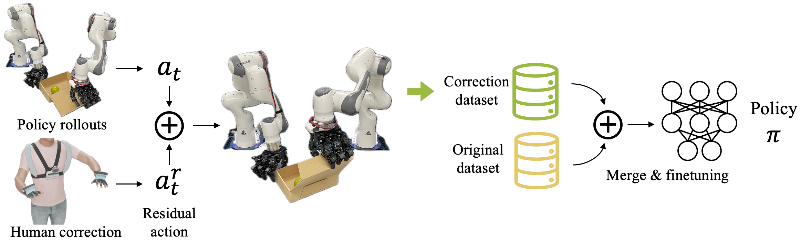
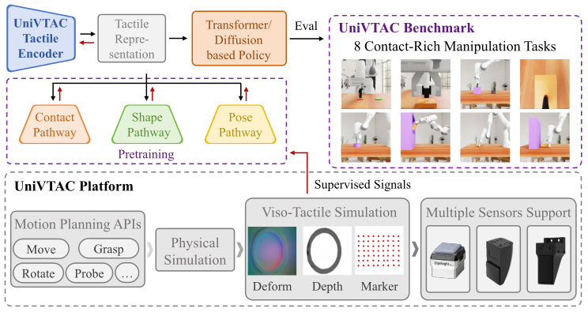

触觉采集硬件: 谁在做、怎么做、能不能用
各方路线选择 / 商业产品与学术硬件的差距 / 传感器材料前沿 / MIT STAG 复现 / 数据站方案 / 触觉基础模型 / 精度保障
摘要: 具身智能的灵巧操作严重依赖高质量示教数据，但当前几乎所有主流采集系统——DexCap、AnyTeleop、UMI、Bunny-VisionPro——都只捕获手部姿态，完全缺失触觉维度。触觉是人类最快的闭环信号（延迟 20-50ms，远快于视觉的 150-200ms），在接触瞬间提供视觉无法替代的控制带宽。围绕"要不要采触觉、在哪侧采、怎么采"，学术界形成了截然不同的路线：Stanford DexCap 选择完全回避触觉，Meta FAIR 押注机器人侧触觉生态，Stanford HATO 证明了力反馈的价值但硬件成本过高，MIT STAG 是唯一走"人手侧高密度触觉"路线且成本可控（¥120/副）的方案。我们判断 STAG 路线是海量采集最可行的起点，最大风险不在硬件而在"触觉数据能否显著提升策略性能"——需尽早做消融实验。
1. 全貌：触觉数据采集的现状与各方路线
1.1 为什么需要触觉
人类灵巧操作的控制回路依赖三种反馈：视觉（全局空间，延迟 ~150-200ms）、本体感觉（关节角度/肌肉张力，~50-80ms）、触觉（接触力/滑动/纹理，~20-50ms，脊髓反射可低至 ~10ms）。触觉是最快的闭环信号，尤其在接触发生的瞬间（抓取、插入、拧转），视觉因遮挡和延迟无法提供足够的控制带宽。Stanford HATO 的实验已初步验证：操作者有触觉反馈时，示教成功率提高 20-40%。
然而"像劳保手套"的工程约束极其苛刻：总厚度 <2mm、单手重量 <100g、弯折寿命 >5万次、成本 <¥1000。传感密度 × 耐久性 × 成本构成不可能三角，当前技术只能取其二。人手指尖有 ~240 感受器/cm²（4种感受器覆盖静态压力到 1000Hz 振动），而最好的实验室原型也只有 25-100 点/cm²、部分多模态——差距在缩小但远未量产。
1.2 三大信号维度的成熟度
| 信号维度 | 成熟度 | 代表方案 | 现状判断 |
|---|---|---|---|
| 手部姿态（关节角+腕部6DoF） | ★★★★☆ | Manus Prime 3 ($5-8K), Rokoko ($1-1.5K), MediaPipe (免费) | 已解决。Manus 是机器人领域事实标准，DexCap/AnyTeleop 等主流系统都用它 |
| 触觉/压力（接触力分布） | ★★☆☆☆ | MIT STAG 548点 (¥120), PPS FingerTPS, Bebop Forte | 最大瓶颈。"能穿戴+高密度+耐用+便宜"只能满足两个 |
| 加速度/动态 | ★★★★★ | BMI270 IMU (2×2mm, $2/片) | 完全成熟，不是瓶颈 |
1.3 各研究组的路线选择与核心信念

Stanford DexCap (Chen Wang, Li Fei-Fei, C. Karen Liu, RSS 2024) 选择完全回避触觉。他们的核心信念是：便携采集+Diffusion Policy 这条路线已经够用——穿戴式 MoCap 采手部姿态和腕部 6DoF，retarget 到 LEAP Hand，训练出的策略可以在物理机器人上完成多种灵巧操作。这条路线的优势是采集系统极其轻便、可扩展，劣势是存在 embodiment gap（人手→机器手的 retargeting 丢失信息），且对需要精细力控的任务（如 USB 插拔、螺丝拧紧）缺乏关键信号。开源: dex-cap.github.io
UCSD AnyTeleop (Xiaolong Wang Lab, 2024) 走的是通用中间件路线。dex-retargeting 框架支持相机手追踪或各类手套输入，可 retarget 到 Allegro/LEAP/Shadow 等多种机器手。模块化设计使输入设备可替换，但同样没有触觉。他们的赌注是：软件层的通用性比硬件层的传感密度更重要。开源: github.com/dexsuite/dex-retargeting
Meta FAIR 的策略与所有人都不同：不在人手装传感器，而是构建完整的机器人侧触觉生态。硬件层从 DIGIT（2020, 视觉触觉指尖, ~$300/个）到 DIGIT 360（2024, 360°多模态: 力+剪切+温度+振动+接近）再到 AnySkin（2024, 可替换磁力触觉皮, $13/个, 即插即用）；软件层有 TACTO 模拟器和 Sparsh 触觉基础模型（2025, Nature Machine Intelligence, 自监督预训练跨任务泛化）。他们的核心信念是：人侧只负责姿态示教，触觉在机器人侧自主获取——通过自身交互+基础模型学习，而非从人手"搬运"触觉信号。

Stanford HATO (2024) 是唯一正面回答"触觉反馈是否有用"的工作。他们用 HaptX 力反馈手套（$5.5K/对, 133 个气动执行器/手, 40 磅阻力）配合 Shadow Dexterous Hand + BioTac 触觉传感器，训练 visuotactile policy。关键结论：力反馈→更自然的示教→更好的策略，成功率提升 20-40%。这支持了"在人手侧加传感/反馈"的价值。但硬件极贵（HaptX + Shadow Hand 数万美元）、笨重（需外置 AirCube 气动基站）、不可便携，完全无法规模化。
Columbia UMI (Cheng Chi, Shuran Song, RSS 2024) 走了一条巧妙的回避路线：手持夹爪+GoPro 的便携采集工具，数据采集与机器人解耦——随时随地采集，不需要机器人在场。这条路线的优势是数据采集成本极低、场景覆盖广，但只支持平行夹爪、无触觉、非灵巧操作。开源: umi-gripper.github.io
MIT STAG (Subramanian Sundaram, Antonio Torralba, Wojciech Matusik, Nature 2019) 是唯一走"人手侧高密度触觉"路线的工作。548 个压阻传感点覆盖全掌面和手指，三明治结构（导电纱线行列网格+Velostat 压阻膜），成本仅 ~$16/副（~¥120）。原始论文采集了 135,000 帧×26 种物体的触觉数据，训练 CNN 做物体识别和重量估计。局限是仅法向压力、迟滞 10-30%、原始采样率仅 8-12Hz。但这是唯一一条成本低到可以大规模部署的触觉手套路线。
国内生态（灵初智能/穹彻 Noetix/智元 AgiBot）以"数据工厂"模式为主，侧重规模而非传感密度。智元 AgiBot World 开源了 1M+ 轨迹但无触觉；灵初专注遥操作采集硬件方案；穹彻做具身基础模型+数据平台。简智机器人（GenRobot）的 DEX 手套是国内首款公开发售的"姿态+触觉"一体化产品，采用磁编码器（标称 0.02°，但这很可能是分辨率而非精度），与 TAG 论文（arXiv:2603.28542, 21-DoF, <1° 经光学动捕验证）技术路线一致。
1.4 我们的判断
六条路线背后是六种不同的核心赌注：DexCap 赌姿态够用，Meta 赌机器人自己能学会触觉，HATO 赌力反馈值得高成本，UMI 赌数据量比数据丰富度更重要，STAG 赌低成本触觉可以规模化。我们选择 MIT STAG 路线，原因有三：(1) 国内外没有人做过"人手侧高密度触觉+机器人策略训练"的完整闭环，这是一个空白且有论文价值的方向；(2) ¥120-650/副的成本是数据工厂的前提——HaptX ($5.5K) 和 SenseGlove (€6K) 永远不可能规模化；(3) 与 Meta 的机器人侧路线不矛盾，可以互补（人手采触觉做示教增强，机器人侧 AnySkin+Sparsh 做自主探索）。最大风险不在硬件，而在触觉数据对策略性能的边际提升是否显著。
2. 商业产品与学术硬件的差距
商业手套市场按功能分三层：姿态追踪（已成熟）、力反馈输出（给操作者施加力）、触觉输入感知（测量操作者施加的力）。对于数据采集，我们关心的是后者——但市场上几乎没有产品真正解决这个问题。
| 产品 | 公司 | 价格/对 | 核心能力 | 重量/手 | 力输入感知 | ROS | 适用判断 |
|---|---|---|---|---|---|---|---|
| Manus Prime 3 | Manus (荷兰) | $5-8K | 10 Flex+2 IMU, 120Hz | 50-80g | ❌ | ✅ | 姿态采集首选，机器人社区事实标准 |
| StretchSense MoCap Pro | StretchSense (新西兰) | $3.5-5K | 10+ 柔性电容, 60-120Hz | 轻 | ❌ | ❌ | 好莱坞级精度（阿凡达2），但无 ROS |
| Rokoko Smartglove | Rokoko (丹麦) | $1-1.5K | 9 IMU(9轴), 100Hz, WiFi | 80g | ❌ | ❌ | 低成本姿态替代，多工位并行首选 |
| HaptX G1 | HaptX (美国) | $5.5K | 133 气动触觉执行器, 40磅阻力 | 重+有线 | ✅输出 | ❌ | 力反馈标杆（HATO 使用），但笨重不可便携 |
| SenseGlove Nova 2 | SenseGlove (荷兰) | €6-10K | 5 制动力反馈+5 振动+4 IMU | 80-90g | ✅输出 | ✅ | 兼顾力反馈与便携，ROS 兼容 |
| Bebop Forte | Bebop (美国) | $1-3K(估) | 10 通道织物电阻(弯曲+力) | 极轻 | ✅输入 | ❌ | 罕见地同时捕获姿态和接触力，但仅 10 通道 |
| PPS FingerTPS | PPS (美国) | $3-8K | 超薄电容压力贴片, 1-5mm 间距 | 极薄 | ✅输入 | ❌ | 空间分辨压力图，可与 Manus 组合补充压力维度 |
| Dexmo | 岱仕 Dexta (深圳) | $10-15K | 11DoF+5 机械力反馈 | 290g | ✅输出 | ❌ | 国内最成熟力反馈，但 290g 影响自然动作 |
| Noitom Hi5 | 诺亦腾 (北京) | $1-1.5K | 9 IMU(9轴), 100Hz | 中 | ❌ | ❌ | 国产低成本姿态方案 |
注："力输入感知"指手套测量使用者施加的力（产生数据）；"输出"指手套向使用者施加力（力反馈，不产生可用于训练的力数据）。
关键发现：能测量操作者施力的商业产品只有 Bebop Forte（10 通道，空间分辨率太低）和 PPS FingerTPS（贴片方案，非手套形态）。没有商业产品提供 >100 点的高密度触觉输入——这正是 MIT STAG 的 548 点方案有价值的原因。Manus 是姿态标准，HaptX 是力反馈标杆，但没有商业产品解决触觉密度问题，必须自研。
开源触觉传感器生态
机器人侧的触觉传感器则有丰富的开源选择。GelSight/GelSlim（MIT）用相机+凝胶实现 ~25μm 分辨率，是最高精度的视觉触觉方案，但体积大不适合人手佩戴。DIGIT（Meta, github.com/facebookresearch/digit-design）是 GelSight 的紧凑版，~$300/个，开源硬件设计。AnySkin（Meta, github.com/raunaqbhirangi/anyskin）用含 NdFeB 磁性颗粒的硅胶+磁力计实现 3 轴力感知，$13/个可替换皮肤，是当前最易用的研究触觉传感器。TacTip（Bristol）可 3D 打印，门槛最低。BioTac（SynTouch）曾是行业标准（19 电极多模态），但已停产。
3. 传感器材料前沿
触觉传感器的性能天花板由材料决定。不同材料在灵敏度、静态/动态响应、耐久性、成本之间的取舍截然不同，没有"万能材料"——实际手套设计必须针对不同区域选择不同材料。
| 材料/技术 | 灵敏度 | 静态力 | 动态力 | 耐久性 | 成本 | TRL | 手套适用判断 |
|---|---|---|---|---|---|---|---|
| 导电纱线+压阻膜 (STAG) | 中 | ✅ | ❌ | 中 | 极低 | 5 | 全掌覆盖基础层，量产可用工业针织机 |
| MXene 微结构 | 极高 (>100 kPa⁻¹) | ✅ | ✅ | 中 | 中 | 3-4 | 指尖高灵敏区域，但氧化稳定性存疑需封装 |
| 离子凝胶 (Iontronic) | 最高 (>1000 kPa⁻¹) | ✅ | ⚠️慢 | 低 | 中 | 2-3 | 可 3D 打印定制，但响应慢(10-100Hz)、泄漏风险 |
| CNT/石墨烯复合 | 高 | ✅ | ✅ | 高 | 中 | 3-4 | LIG 可激光刻蚀快速原型，批次一致性是量产障碍 |
| PVDF 压电 | 高 | ❌仅动态 | ✅ >10kHz | 高 | 低 | 5 | 滑动/纹理检测必选，自供电，但无法测静态力 |
| 液态金属 (EGaIn) | 中 | ✅ | ✅ | 自愈合 | 高 | 3 | 优秀柔性互连，多轴通道可测压力+剪切，镓微腐蚀铝 |
| 磁力 (AnySkin) | 中 | ✅ | ✅ | 可换皮 | 低 | 5 | 3 轴(法向+剪切)，$13/个，最适合可替换指尖模块 |
| 电容式柔性阵列 | 中高 | ✅ | ✅ | 高 | 中 | 4-5 | 迟滞(3-10%)远优于压阻(10-30%)，寄生电容需处理 |
实际手套设计的材料策略：没有单一材料能同时覆盖静态压力和动态振动。实用方案是分区多材料：全掌用导电纱线压阻（成本低、覆盖广）做基础层，指尖区域叠加 MXene 或电容式（高灵敏度），再加 PVDF 压电膜做滑动检测补充。这也是人手的设计——Merkel 细胞管静态压力，Pacinian 小体管振动，不同感受器覆盖不同频段。
前沿研究组：John A. Rogers 组（Northwestern）的蛇形网格互连和 NFC 无线供电贴片技术直接适用于手套柔性互连；Zhenan Bao 组（Stanford）2024 年在 Nature 发表的内在可拉伸神经形态设备实现了体上信号处理——在传感器层面做"智能压缩"，可将数据量降低 10-100×；Takao Someya 组（东京大学/RIKEN）的 <1μm 厚度有机薄膜晶体管有源矩阵解决了被动矩阵的串扰问题，实现 ~100 taxels/cm²。这些技术距离量产手套仍有 2-5 年距离，但指明了方向。
数据预算速算：理想手套配置约 950 触觉点+124 结构通道（16 个 6 轴 IMU+28 关节应变），200Hz 采样原始数据流 ~2.7 Mbps，压缩后 ~270-540 kbps，BLE 5.0 (2Mbps) 可承载。每小时 ~150 MB 压缩后存储，10,000 小时 ~1.5 TB，NAS 可管理。500mAh LiPo 供电续航约 7.7 小时。
4. MIT STAG 复现与工程方案
原始论文："Learning the signatures of the human grasp using a scalable tactile glove"，Subramanian Sundaram, Pallavi Kellnhofer, Yunzhu Li, Jun-Yan Zhu, Antonio Torralba, Wojciech Matusik. Nature, Vol. 569, pp. 698-702, 2019. DOI: 10.1038/s41586-019-1234-z. MIT CSAIL.
STAG 的传感器架构是经典的三明治结构：两层镀银导电纱线（行和列，正交排列）中间夹 Velostat 压阻膜（3M 1706, 0.1mm 厚），行列交叉点处压力压缩压阻材料使电阻下降，548 个交叉点形成矩阵多路复用读出。原始读出电路用模拟多路复用器逐行扫描+10bit ADC，全帧率仅 8-12Hz。原始数据集 135,000 帧×26 种物体，训练 CNN 做物体识别和重量估计。
BOM 清单（单副手套，~¥120）
| 材料 | 规格 | 来源 | 价格 |
|---|---|---|---|
| 棉质针织手套底 | 紧贴手型 | 淘宝/劳保店 | ¥2 |
| 镀银导电纱线 | Shieldex 235/34 dtex, ~50Ω/m | Shieldex / 淘宝"镀银导电线" | ¥30/50m |
| Velostat 压阻膜 | 3M 1706, 0.1mm, 31kΩ/sq | 淘宝"Velostat" | ¥15/张(A4) |
| CD74HC4067 多路复用器 ×4 | 16 通道 | 立创商城 | ¥16 |
| ESP32-S3 开发板 | 双核 240MHz, 12bit ADC, BLE+WiFi | 淘宝 | ¥25 |
| ADS1115 外置 ADC ×2（可选） | 16bit, 860SPS | 淘宝 | ¥20 |
| 连接线、FPC 排线 | — | — | ¥10 |
| 总计 | ~¥120 (~$16) | ||
制作流程
Step 1: 在手套内侧沿手指和掌心缝制约 24 行平行镀银导电线，间距 5-8mm，从指尖到掌根方向排列，线头引至腕部汇集。Step 2: 按掌面+指面形状裁剪 Velostat 压阻膜（可分区：每指一片+掌心一片便于贴合弯曲面），覆盖在行导线上粘贴固定。Step 3: 在 Velostat 外侧缝制约 23 列正交导线，形成 24×23=552 个交叉传感点。Step 4: 外层覆薄针织布保护，腕部线头焊接 FPC 排线接读出 PCB。Step 5: ESP32-S3 控制 CD74HC4067（×2 行选择+×2 列读取），电压分压器（参考电阻串联传感器交叉点），逐行激活采样所有列，完整扫描 552 点约 30-50Hz。Step 6: BLE 或 WiFi 流传输到主机，Python 接收→numpy→HDF5 存储+实时压力热力图可视化。
五项关键改进
改进 1: 采样率 8Hz→50-100Hz——ESP32-S3 DMA + ADS1115 外置 16bit ADC，DMA 自动搬运数据 CPU 不等待，成本仅 +¥20。改进 2: 添加手部姿态——BNO055 IMU ×16（每指 3 节×5 指+手背 1 个）通过 TCA9548A I2C 多路复用器通信，成本 +¥400，同时获取触觉压力图+全手关节角度。改进 3: 减少漂移——硬件层用电容式替代压阻（迟滞从 10-30% 降至 5-10%）或 EeonTex 导电织物替代 Velostat；软件层做基线减除+周期零力校准+LSTM 漂移模型预测。改进 4: 剪切力感知——指尖区域加 AnySkin 磁力计模块实现 3 轴力感知，成本约 +¥50/指尖。改进 5: 无线化——ESP32 原生 BLE+WiFi，552 点×12bit×50Hz=330kbps，BLE 5.0 可承载。
STAG+IMU v1.0 完整规格
融合手套总成本 ~¥655 (~$90)：STAG 触觉层 ¥120 + BNO055×16 ¥400 + TCA9548A×2 ¥10 + nRF5340 主控 ¥60（BLE 5.3 更低功耗替代 ESP32）+ 500mAh LiPo ¥15 + 柔性 PCB（嘉立创打样）¥50。性能：550+ 触觉点 @50Hz 法向压力 1-100kPa，16 个 9 轴 IMU @100Hz 全手关节角+腕部方位，BLE 5.3 ~500kbps 压缩后传输，续航 ~6 小时，重量 <80g（不含电池 ~60g），形态接近普通手套+手背一块硬币大小的采集模块。对比 Manus Prime 3（$6K，姿态精度更高但无触觉），本方案（$90，姿态精度中等但有 550 点触觉）在海量采集场景下优势明显。
5. 数据采集站与训练管线
数据采集站的设计需要在成本、数据丰富度和吞吐量之间权衡。我们设计了三种递进方案，核心逻辑是先用最小代价验证闭环，再根据消融实验结果决定是否投入触觉增强和规模化。
方案 A: 姿态优先（~$8-15K，现在就能搭）——人手侧 Rokoko Smartglove ($1.5K/对) 或 Manus Prime 3 ($6K/对)，视觉侧 RealSense D435i ×3 ($900) + GoPro Hero 12 ($400) 腕部第一视角，机器人侧 LEAP Hand ×2 ($4K) + 机械臂。软件用 DexCap/AnyTeleop retargeting + Diffusion Policy 训练。数据包含关节角 @100Hz + 多视角 RGBD + 腕部视角，但缺失触觉压力。这是验证端到端闭环的最小代价方案。
方案 B: 触觉增强（~$6-10K）——人手侧替换为自制 STAG+IMU 手套 (~$90/副，×10 副轮换 $900)，机器人指尖装 AnySkin ($13/个×10 指=$130)。关键新增是数据融合层：PTP 协议统一时间戳（模态间同步 <1ms），HDF5 存储格式同时记录人手触觉+姿态+机器人触觉+关节+多视角 RGBD。这是验证"触觉数据是否提升策略性能"的最小代价方案。
方案 C: 大规模采集工厂（10+ 工位，~$62K）——每工位配置 Meta Quest 3 ($500, 手追踪+AR 透视) + STAG 触觉手套 ($90) + RealSense ×2 ($600) + LEAP Hand ($2K) + 工位 PC ($3K, RTX 4070)，单工位 ~$6.2K。吞吐量：每工位 ~15 demos/hour，10 工位 150 demos/hour，每天 8h = 1,200 demos，每月 22 天 = 26,000 demos/month。对比：robomimic 最大 300 demos，DexCap ~50 demos/task，AgiBot World 1M+ 轨迹但多为简单抓取——一个月即可超越现有灵巧操作数据集规模。存储：每 demo ~50MB，26K demos/月 ≈ 1.3TB/月，NAS 可承受。
LEAP Hand 与 Diffusion Policy
LEAP Hand（leaphand.com）：16 DoF（每指 4 个：MCP 展/收+MCP 弯+PIP 弯+DIP 弯），Dynamixel XC330 伺服 ×16，~$2,000（含 3D 打印+伺服+电子），~550g，每关节 0.93Nm。已验证兼容 Rokoko/Manus/MediaPipe/Vision Pro/DexCap/Leap Motion 等所有主流遥操作输入，指尖可集成 AnySkin/DIGIT/GelSight Mini。开源 URDF/MJCF 仿真模型和控制 API。
Diffusion Policy（Cheng Chi et al., RSS 2023, github.com/real-stanford/diffusion_policy）：输入为视觉(RGB)+本体感觉(关节角)+可扩展触觉，输出未来 16-32 步动作序列。数据需求最少 ~50 demos/task（DexCap 验证），推荐 200-500 demos/task。训练用 Conditional U-Net (1D temporal)，扩散步数 100（训练）/10-20（推理 DDIM），单卡 RTX 4090 训练 2-8 小时。数据质量 > 数据数量（robomimic 关键结论）。
HDF5 数据格式
6. 触觉基础模型与 2025-2026 进展
触觉正在复制视觉领域的路径：大规模预训练→基础模型→下游微调。三个标志性工作定义了这条路线的现状。
Sparsh（Meta FAIR, 2025, Nature Machine Intelligence）是第一个真正的触觉基础模型。在大规模触觉图像数据上用自监督方法（MAE/DINO/IJEPA）预训练视觉触觉编码器，下游任务（抓取稳定性、表面分类、姿态估计等 6 个任务组成 TacBench）微调即可泛化。关键发现：DINO 和 IJEPA 编码器显著优于 MAE，暗示触觉信号的局部结构特征（DINO 擅长）比全局重建（MAE 擅长）更重要。Sparsh 与 Meta 的硬件生态（DIGIT/AnySkin/TACTO 模拟器）形成完整闭环。
UniTouch（ECCV 2024）走类 CLIP 路线，建立触觉-视觉-语言的通用表征空间，实现跨传感器迁移——在 GelSight 上训练的表征可以在 DIGIT 上用。这解决了触觉领域长期存在的"每换一种传感器就要重新训练"的碎片化问题。
UniVTAC（2025-2026）在 8 个视触觉任务上建立基准，核心发现是仿真→真机迁移有效：仿真预训练提升 17.1%（仿真环境）和 25%（真实环境）。这意味着可以先在 TACTO/DiffTactile 模拟器中大规模预训练，再少量真机微调。

更多前沿工作：TAG（arXiv:2603.28542）是一种触觉感知手套，21-DoF 关节追踪实现 <1° 误差（光学动捕验证），32 执行器触觉阵列。RoboPaint 探索通过触觉重建物体表面属性。UniTacHand 尝试统一多种触觉手的表征。DiffTactile（ICLR 2025）实现可微分 FEM 触觉模拟，梯度直接回传到策略——从"域随机化"转向"可微分模拟"，更高效缩小 sim-to-real gap。TactileLang（arXiv:2503.23581）将触觉信号接入 LLM，开始了触觉-语言多模态的探索。
国内生态概览
传感器层：钛深科技 TacSense（深圳）是国内最强的柔性压力传感阵列/电子皮肤供应商，可定制触觉手套；帕西尼感知 PaXini、他山科技面向机器人方向。手套层：岱仕 Dexta（力反馈外骨骼，$10-15K，国内最成熟）、诺亦腾 Noitom（IMU 手套，$1-1.5K）、灵初智能（遥操作方案商）。灵巧手层：因时 INSPIRE（国内市占率最高）、智元 AgiBot（自研灵巧手+AgiBot World 开源 1M+ 轨迹）、星动 Galbot（开源训练框架）。市场空白：没有国内公司提供"触觉数据手套 for 机器人学习"的集成产品——现有产品要么来自 VR（Dexta/Noitom），要么来自传感器领域（钛深），缺乏面向具身智能数据采集的全集成方案。
7. 精度保障要点
厂商标称参数是"实验室最优值"，不是"工程可用值"。真实采集精度 = 传感器本体精度 × 标定质量 × 环境鲁棒性 × 时间稳定性。核心概念：分辨率 ≠ 精度 ≠ 重复性——厂商常混用这三个概念。例如 3mm 磁编码器分辨率 360°/16384 ≈ 0.022°，这是分辨率而非精度；系统精度要含机械间隙、安装偏差、皮肤滑移，真实关节精度在 0.5-2° 范围。对数据采集而言，重复性往往比绝对精度更重要——固定偏置可标定消除，随机散布无法事后修复。
六类误差源：① 传感器本体——磁编码器偏心正弦误差、压阻迟滞 10-30%、压电电荷泄漏；② 机械耦合——弯曲 MCP 关节时 PIP 传感器因织物牵拉产生读数变化，需构建耦合矩阵做软件解耦；③ 佩戴接口——织物手套最大的系统性误差源：抓握中手套滑移 1-3mm→关节角偏移 2-5°，同一人每次佩戴传感器位置不完全一致；④ 环境——压阻 TCR ±2%/°C，连续操作手指温升 3-5°C→15% 基线偏移，汗液改变接触阻抗；⑤ 时序——多模态同步需 <2ms（100Hz 周期的 20%），通过 PTP 协议或硬件触发实现；⑥ 重定向映射——人手 22 DoF→LEAP Hand 16 DoF 的结构性信息损失，不同映射方法差异可达 3-10°。
误差传播：总 RMSE = √(RMSE₁² + ... + RMSE₆²)（假设独立），但佩戴误差和传感器误差可能耦合。实际验证需：(1) 标准手模上消除佩戴误差，单独测传感器+信号链；(2) "戴-脱-再戴"实验隔离佩戴变异；(3) 真人+光学动捕做端到端验证；(4) 逐环节合成 ≈ 端到端实测则模型合理，差距大则存在未建模耦合。
在线质量门控（DataQualityGate）
标定协议：每次佩戴 ~30s（零位+ROM+FK 验证+触觉零点），每日设备校验 ~5min（标准手模+标准力+跨手套一致性），每 100 小时深度标定（光学动捕交叉验证+传感器健康检查+疲劳寿命评估，失效率 >5% 退役）。
案例：简智机器人 GenRobot DEX——国内首款"姿态+触觉"一体化织物手套，标称关节精度 0.02°、指尖定位 1mm、触觉分辨率 0.05N。工程审视：0.02° 高度存疑（工业级旋转编码器水平，3mm 磁编码器更可能是分辨率而非精度，真实系统精度预计 0.5-2°）；指尖 1mm 与 0.02° 不自洽（1mm 约对应 0.5° 关节误差）；触觉 0.05N 未说明是 resolution 还是 accuracy，传感点数/分布未公开。TAG 论文（arXiv:2603.28542）报告 <1° 关节误差（经光学动捕独立验证），如果 DEX 基于类似技术，真实精度在 0.5-1° 是合理预期。缺乏第三方验证和长时稳定性数据。
8. 路线图与核心判断
| 阶段 | 时间 | 目标 | 预算 | 里程碑 |
|---|---|---|---|---|
| Phase 1 | 0-2 月 | 快速启动，验证闭环 | ~$4K | Rokoko/Manus + LEAP Hand + DexCap/AnyTeleop + Diffusion Policy；手搓 STAG v0.1 (¥120) |
| Phase 2 | 2-4 月 | 触觉融合，消融实验 | ~$2K | STAG+IMU v1.0 (¥650)；LEAP 指尖装 AnySkin；有触觉 vs 无触觉对比实验 |
| Phase 3 | 4-8 月 | 规模化采集 | ~$15-30K | 手套定型批量 20 副；3-5 并行工位；目标 10,000+ demos；Sparsh/UniTac 预训练触觉表征 |
| Phase 4 | 8-12 月 | 发布与开源 | — | 开源硬件设计+数据集（首个大规模灵巧操作触觉数据集）+论文 |
六条核心判断
- 纯手套形态的全触觉采集，2026 年技术上可做到，但需自研。MIT STAG 路线成本最低（¥120/副），加 IMU 后约 ¥650/副，是海量采集最可行起点。
- 国内外无人做过"人手侧高密度触觉+策略训练"完整闭环。DexCap/AnyTeleop 只采姿态，Meta 触觉生态只在机器人侧。这是空白且有论文价值的方向。
- "触觉手套成本低到可大规模部署"是关键护城河。HaptX ($5.5K) 和 SenseGlove (€6K) 永远不可能做数据工厂。
- 国内生态支撑已到位：LEAP Hand (开源灵巧手) + INSPIRE (国产灵巧手) + AgiBot World (数据管线参考) + 钛深科技 (定制传感器) + 嘉立创 (低成本 PCB)。
- 最大风险不是硬件，而是"触觉数据能否显著提升策略性能"。Phase 2 尽早做消融实验。
- Meta 的机器人侧触觉路线与人手侧路线不矛盾，可互补——人手采触觉做示教增强，机器人侧 AnySkin+Sparsh 做自主探索。
参考文献
- Johansson, R.S. & Flanagan, J.R. Coding and use of tactile signals from the fingertips in object manipulation tasks. Nature Rev Neurosci, 2009.
- Sundaram, S. et al. Learning the signatures of the human grasp using a scalable tactile glove. Nature, 569, 698-702, 2019.
- Lambeta, M. et al. DIGIT: A Novel Design for a Low-Cost Compact High-Resolution Tactile Sensor with Application to In-Hand Manipulation. IEEE RA-L, 2020.
- Tippur, A. et al. DIGIT 360: Connecting Sight, Sound, and Touch for 360-degree Finger Perception. arXiv:2405.14276, 2024.
- Bhirangi, R. et al. AnySkin: Plug-and-Play Skin Sensing for Robotic Touch. arXiv:2409.08276, 2024.
- Bhirangi, R. et al. ReSkin: Versatile Replaceable, Lasting Tactile Skins. arXiv:2111.00071, 2022.
- Guzey, I. et al. See, Hear, and Feel: Smart Sensory Fusion for Robotic Manipulation. arXiv:2212.03858, 2022.
- Yang, Y. et al. Tacchi: A Pluggable and Low Computational Cost Elastomer Deformation Simulator for Optical Tactile Sensors. IEEE RA-L, 2023.
- Si, Z. et al. Taxim: An Example-based Simulation Model for GelSight Tactile Sensors. IEEE RA-L, 2022.
- Ward-Cherrier, B. et al. The TacTip Family: Soft Optical Tactile Sensors with 3D-Printed Biomimetic Morphologies. Soft Robotics, 2018.
- Wang, C. et al. DexCap: Scalable and Portable Mocap Data Collection System for Dexterous Manipulation. RSS, arXiv:2403.07788, 2024.
- Lin, T. et al. HATO: Learning Visuotactile Skills with Haptic Teleoperation. 2024.
- Qin, Y. et al. AnyTeleop: A General Vision-Based Dexterous Robot Hand-Arm Teleoperation System. RSS, 2023.
- He, Y. et al. Bunny-VisionPro: Real-Time Bimanual Dexterous Teleoperation for Imitation Learning. arXiv:2407.03162, 2024.
- Li, X. et al. Open-TeleVision: Teleoperation with Immersive Active Visual Feedback. 2024.
- Chi, C. et al. Universal Manipulation Interface. RSS, 2024.
- Handa, A. et al. DexPilot: Vision-Based Teleoperation of Dexterous Robotic Hand-Arm System. ICRA, 2020.
- Wong, K.W.K. et al. TeleMoMa: A Modular and Versatile Teleoperation System for Mobile Manipulation. 2024.
- Chi, C. et al. Diffusion Policy: Visuomotor Policy Learning via Action Diffusion. RSS, 2023.
- Mandlekar, A. et al. What Matters in Learning from Offline Human Demonstrations for Robot Manipulation. arXiv:2108.03298, 2021.
- Rajeswaran, A. et al. Learning Complex Dexterous Manipulation with Deep Reinforcement Learning and Demonstrations. RSS, 2018.
- Xu, Y. et al. UniDexGrasp: Universal Robotic Dexterous Grasping via Learning Diverse Proposal Generation and Goal-Conditioned Policy. CVPR, 2023.
- Mandlekar, A. et al. RoboTurk: A Crowdsourcing Platform for Robotic Skill Learning through Imitation. CoRL, 2018.
- Higuera, C. et al. Sparsh: Self-supervised Touch Representations for Vision-Based Tactile Sensing. Nature Machine Intelligence, 2025.
- Yang, F. et al. UniTac: A Unified Tactile Foundation Model. arXiv:2505.18764, 2025.
- Fu, L. et al. TactileLang: A Tactile-Language Multimodal Model. arXiv:2503.23581, 2025.
- Yang, Y. et al. UniT: Unified Tactile Representation for Robot Learning. arXiv:2408.06481, 2024.
- Yang, F. et al. UniTouch: A Unified Representation for Tactile Perception. ECCV, 2024.
- Zhao, H. et al. UniVTAC: A Unified Vision-Tactile Benchmark. 2025-2026.
- Si, Z. & Yuan, W. DiffTactile: A Physics-based Differentiable Tactile Simulator for Contact-Rich Robotic Manipulation. ICLR, 2025.
- Kuhn, J. et al. Sensor Benchmark for Imitation Learning with Unitree G1. arXiv:2603.28422, 2026.
- TAG: Tactile-Aware Glove. arXiv:2603.28542, 2026.
- Bjorck, J. et al. GR00T N1: An Open Foundation Model for Generalist Humanoid Robots. arXiv:2503.14734, 2025.
- Tactile sensing for robotic applications. Nature Reviews Electrical Engineering, 2025.
- Robot Learning with Tactile Feedback: A Survey. arXiv:2502.09235, 2025.
- AgiBot World: 1M+ Trajectories Open-Source Dataset. 智元机器人, 2025.